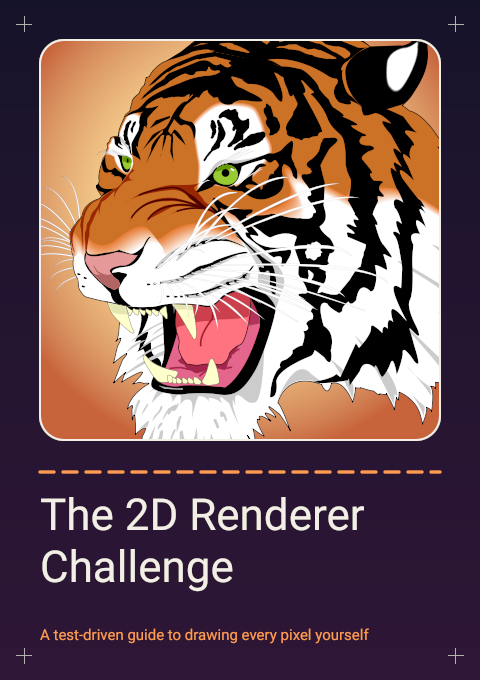

Chapter Zero
Open any drawing program, pick the ellipse tool and drag out a circle. It takes about a second. In that second something decided, for every one of the few thousand pixels along the circle's edge, how much of that pixel the circle covers, what colour the paint is at that exact spot, and how to mix the paint with whatever was there before, without being too dark along the rim or too bright where two shapes meet. You've never seen it make those decisions, because when it gets them right there's nothing to see. This book is about making them yourself.
You're going to write a 2D vector renderer from nothing: the kind of program that sits under a browser, a PDF viewer, a font engine or an illustration tool, and turns shapes into pixels. You'll write it test first, in whatever language you like, with no graphics library anywhere, and at the end of each chapter you'll have a picture you drew yourself and a pile of passing tests that say it's right.
This chapter has no tests and no code. It's the tour: what you'll build, the one idea the whole book hangs on, the rules, how a chapter works, and a map with the places you can stop. Chapter 1 is where the typing starts.
This is the last picture in the book, the cover, and you'll draw every pixel of it.

reference/epilogue/cover.ppm, shown here as an image. By the end of the book your own program draws it, and a test checks every byte.It doesn't look like much of a program, and that's the point. The panel is a rounded rectangle used as a clip. The warm light behind the tiger is a radial gradient. The tiger is the Ghostscript tiger, the test image every 2D renderer has drawn since the 1990s: 240 paths in nested groups, with a matrix on top and hairline strokes on its whiskers. The rule under the panel is a stroke with a dash pattern and round caps. The crop marks are a group drawn at half opacity. The title is Roboto, set with kerning, broken into two lines, and rasterized glyph by glyph. Every one of those is a chapter, and the finished cover is seven lines of code that call them.
Along the way you'll build, in about this order: a canvas that stores light, not numbers; antialiased lines; matrices; paths and the two rules for what's inside them; a polygon fill, then an exact antialiased fill; Bézier curves and arcs; Porter–Duff compositing and blend modes; gradients; image resampling; clips, masks and groups; strokes, including offsetting curves and dashes; glyph outlines, text rasterization, line layout and a field guide to shaping; an SVG renderer; and a chapter that makes it all fast without changing a single byte of output. After that there are four bonus chapters for anyone who wants to keep going.
Here's the whole book in two sentences, and you'll be reminded of them often.
Rasterization computes coverage. Painting composites paint through coverage.
Coverage is a number between 0 and 1 for every pixel: how much of that pixel the shape covers. Chapter 2 introduces it, and from then on almost everything is either a better way of computing coverage or a more interesting thing to paint through it. Once you hold a coverage buffer, a stroke turns out to be a fill of a different outline. A clip is two coverage buffers multiplied. A glyph is a path somebody else drew. An SVG file is a list of paths with paint attached. Three quarters of the book is learning to see that, and the other quarter is the places where it gets hard anyway.
The book is modeled on Jamis Buck's The Ray Tracer Challenge, and it keeps that book's rules, plus a few of its own.
.ttf.Every chapter opens on a concrete problem, usually one that looks like it should have a one-line answer and doesn't. Then it goes round the same loop, a few times per chapter: the idea, in prose and figures; a feature file of scenarios that pin down exactly what the idea means; you make the scenarios pass; you render something and look at it. Every render the book asks for is a named function with a reference image, so "look at it" is also a test.
Each chapter ends with a plate: the picture that proves the chapter works. Somewhere in the middle there's a box called The trap, which is the mistake nearly everyone makes on that topic. Most traps are there because the book's own author made the mistake first. There are In the GUI asides, and notes like the one below that explain how to use the book itself.
Every figure in the book is drawn live in your browser, and under each one is a canvas source toggle that shows the JavaScript that drew it. It's there so you can trust the picture: it is provably the code that ran. It's also, from chapter 2 on, a working implementation of the chapter. If you want the book to teach you, write your own first, get the scenarios passing, and read the figure's code afterwards to compare notes.
There is no exercises section anywhere. If the book asks you to do something, whether it's writing a function, deciding what happens at an edge case or drawing a picture, there's a scenario that says what the right answer is. If you find a step that isn't pinned by a test, that's a bug in the book.
A ray tracer's tests are mostly exact: a ray hits a sphere at t = 4, and that's that. A 2D renderer's output mostly isn't a number you can write down, and a test that pinned a whole 400 by 400 image by hand would be unreadable and break every time you tidied your code. So the book's tests come in three kinds, and chapter 1 uses all three before it's done. Chapter 1 also sets out the notation, including how close two numbers have to be to count as equal.
By the last chapter the book has close to nine hundred scenarios, give or take how your framework counts the rows of an outline. Every number in every one of them came from running code, not from arithmetic done by hand, and the reference images were checked by looking at them as well as by diffing them.
A language with floating point numbers and a test framework. That's close to the whole list. Any language you can write comfortably is fine. Test readers have worked through the first six chapters in twelve languages (C, C#, Dart, Java, JavaScript, Lean, Lua, Python, Ruby, Rust, Swift and TypeScript) and the whole book in Python, Java and Rust. Fast languages make the later chapters more pleasant. Python is fine too, with a coffee during the tiger.
The maths is high-school algebra and a little trigonometry. You'll meet vectors, a 3×3 matrix, the quadratic formula and the derivative of a polynomial, and every one of them is explained where it's used. Nothing needs calculus beyond that, and nothing needs linear algebra beyond multiplying a matrix by a point.
You also need the book's files. The reference/ directory holds the reference
images the golden tests compare against, and the font and SVG files the later chapters read;
the scenarios load them by path, and chapter 1 tells you where to put the directory so the
paths resolve. The features/ directory holds every scenario, one file per section,
exactly as the chapters print them. Your tests never read it: it's there so you can copy
scenarios from a file instead of from the page, and run them with Cucumber if you'd like to.
The main track is twenty-one chapters in six parts. The parts build on each other in order, and each one leaves you with something that works on its own.
| Part | Chapters | What you have at the end |
|---|---|---|
| I. Pixels and Coverage | 1–3 | A canvas that stores light, a PPM writer, coverage, and antialiased lines. One deliberately bad renderer for everything after to beat. |
| II. Geometry and the Fill | 4–8 | Transforms, paths, an exact antialiased fill and curves. A rasterizer as good as a production one. Everything after feeds it more interesting shapes. |
| III. Paint | 9–12 | Compositing, blend modes, gradients, images, clips, masks and groups: what colour, and how it meets what's already there. |
| IV. Strokes | 13–15 | Lines with width, joins, caps, offset curves and dashes. No new rasterizer, and the fiddliest geometry in the book. |
| V. Type | 16–19 | Glyph outlines, text rasterization, kerning, line breaking and alignment, and a working tour of how shaping handles Arabic. |
| VI. The Whole Machine | 20–21 | An SVG renderer that draws the tiger, and the same renderer taken from 29 seconds a tiger to under two in Python, with byte-identical output. |
If you stop after Part II, you have a real rasterizer. After Part III it paints the way a PDF viewer does, gradients, images and clips included, as long as nothing needs an outline. After Part IV it strokes. Part V, type, can be put off: the SVG renderer in Part VI never draws text, and the only thing it borrows from Part V is the background colour chapter 16's figures are drawn on. You'll want Part V back for the epilogue, whose cover has a title. Chapter 21 finishes the main track, and the cover needs nothing past it.
Then there are two bonus tracks, which you can take or leave:
The epilogue ties it together: a look back at what everything turned out to be, the cover, with a bonus variant for readers who did chapter 23, and a list of what the book left out and where to go to learn it.
One last thing before you start. A few of these chapters are hard. Chapter 7's fill, chapter 14's offset curves and chapter 22's booleans are hard for everyone, including the people who write renderers for a living, and the book says so when it gets there. The rest is less frightening than its reputation. The tests will tell you when you've got it right, every time.
Turn the page. There's a question about a gray pixel waiting for you.